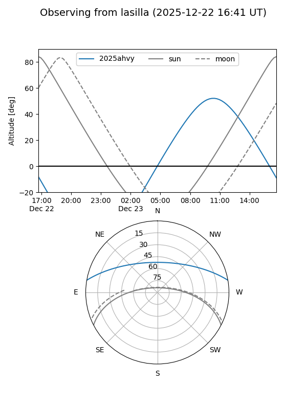
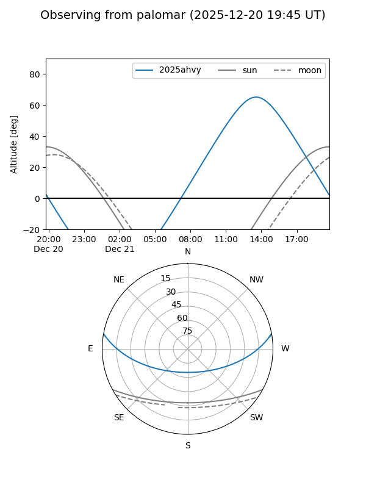

2025ahvy
Target 2025ahvy at 2025-12-22 14:06
Aliases and brokers:
FINK: fink-portal.org/ZTF25acivwmo
Lasair: lasair-ztf.lsst.ac.uk/objects/ZTF25acivwmo
ALeRCE: alerce.online/object/ZTF25acivwmo
TNS: wis-tns.org/object/2025ahvy
YSE: ziggy.ucolick.org/yse/transient_detail/2025ahvy
alt names
ZTF25acivwmo (ztf,fink_ztf)
2025ahvy (tns,yse)
Coordinates:
equatorial (ra, dec) = 176.4061,+8.71348
equatorial (HMS+DMS) = 11:45:37.47,+08:42:48.51
galactic (l, b) = (259.6651,+65.89111)
Flags:
Photometry:
last ztfg=19.12
2 ztfg detections
Lightcurve

Visibility


Additional plots